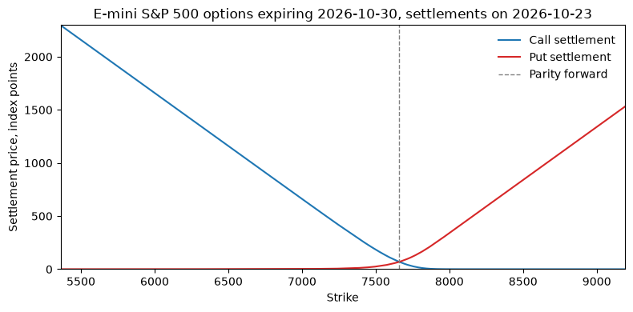
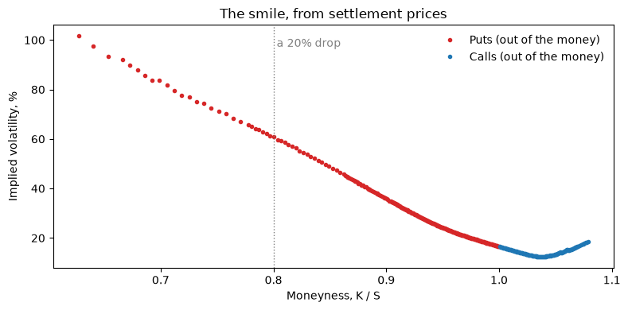

01. E-mini S&P 500 Options Data from Databento#
Everything in this case study starts from one table: the price of every listed option on the S&P 500 at the close of one session. This guide is about where that table comes from and what is in it.
In HW 2 you pulled 30-Day Fed Funds futures from Databento’s CME Globex
feed with four parameters: a dataset, a schema, a symbol, and the kind of
symbol it was. Options on futures use the same feed, and the pull in
src/pull_es_options.py is written for you this time. What is new is the
data: options have a strike and an expiration, so one product is
thousands of contracts, and the price we want is not a trade but a
settlement.
In this guide
Which options: the end-of-month E-mini S&P 500 options, and why them.
Which price: the exchange’s settlement, from the
statisticsschema, and why not daily bars.Which contract is which: the
definitionschema.One session’s chain and its smile.
Where the strikes stop, which is the point of the whole exercise.
from pathlib import Path
import matplotlib.pyplot as plt
import numpy as np
import pandas as pd
import monitor
import pull_es_options
import pull_fred
import smile
from settings import config
DATA_DIR = Path(config("DATA_DIR"))
pd.set_option("display.width", 120)
pd.set_option("display.max_columns", 20)
options = pull_es_options.load_es_options()
futures = pull_es_options.load_es_futures()
fred = pull_fred.load_fred()
# The newest session the monitor computed a row for (a session it had to
# skip, a rare chain with too few usable strikes, is not shown here either).
computed = set(monitor.load_history()["date"]) & set(options["date"])
latest = max(computed) if computed else options["date"].max()
print(f"{len(options):,} option settlements over {options['date'].nunique()} sessions, "
f"{options['date'].min().date()} to {latest.date()}")
15,412 option settlements over 5 sessions, 2026-10-19 to 2026-10-23
Which options: the E-mini end-of-month family#
The E-mini S&P 500 future (CME root ES) is the most traded equity index
contract in the world, and CME lists several families of options on it.
The quarterly options expire with the future itself, in the morning, and
are American-style. The end-of-month options (root EW) and the
weekly options (EW1 to EW4 for Fridays, others for Monday to Thursday)
are European-style and settle at 4:00 p.m. ET, in the afternoon, like the
SPX options the academic literature uses. The end-of-month family alone
gives an expiration every month about seven months out, and then
quarterly, which is enough to bracket a 30-day horizon on every session.
That is what we pull.
Each option exercises into a future, the nearest quarterly ES contract
that expires after the option does. Databento’s definition records say
which:
latest_chain = options[options["date"] == latest]
expiries = (
latest_chain.groupby("expiration")
.agg(days_to_expiry=("days_to_expiry", "first"), contracts=("symbol", "size"),
strikes=("strike", "nunique"), underlying=("underlying", "first"),
lowest_strike=("strike", "min"), highest_strike=("strike", "max"))
)
expiries
| days_to_expiry | contracts | strikes | underlying | lowest_strike | highest_strike | |
|---|---|---|---|---|---|---|
| expiration | ||||||
| 2026-10-30 | 7 | 808 | 404 | ESZ6 | 100.0 | 10800.0 |
| 2026-11-30 | 38 | 330 | 165 | ESZ6 | 100.0 | 10800.0 |
| 2026-12-31 | 69 | 358 | 179 | ESH7 | 100.0 | 11200.0 |
| 2027-01-29 | 98 | 228 | 114 | ESH7 | 1600.0 | 11200.0 |
| 2027-02-26 | 126 | 222 | 111 | ESH7 | 1600.0 | 11200.0 |
| 2027-03-31 | 159 | 250 | 125 | ESM7 | 1400.0 | 11200.0 |
| 2027-06-30 | 250 | 252 | 126 | ESU7 | 1400.0 | 11400.0 |
| 2027-09-30 | 342 | 254 | 127 | ESZ7 | 1400.0 | 11400.0 |
| 2027-12-31 | 434 | 236 | 118 | ESH8 | 1600.0 | 11600.0 |
| 2028-03-31 | 525 | 230 | 115 | ESM8 | 1800.0 | 11600.0 |
Which price: the settlement#
A daily bar (ohlcv-1d, the schema HW 2 used) exists for a contract only
on a day it traded, and most listed strikes do not trade on most days.
What exists for every listed contract every day is the exchange’s
settlement price: the value CME assigns at the close to mark
positions, from the quotes near the money and a model in the wings. It is
published in the statistics schema, as one record type among several
(stat_type 3; the schema also carries the open interest, the session
high and low, and others), twice a day, a preliminary and a final; the
pull keeps the final.
The four parameters of the pull, then, are the dataset and symbology you know from HW 2, a different parent symbol, and a different schema:
pull_es_options.build_queries("2026-10-15", "2026-10-16")["option_statistics"]
{'dataset': 'GLBX.MDP3',
'symbols': ['EW.OPT'],
'stype_in': 'parent',
'start': '2026-10-15',
'end': '2026-10-16',
'schema': 'statistics'}
Which contract is which: the definition schema#
A statistics record names its contract by instrument_id and by symbol,
and the symbol, EWV6 P7850 say, reads: root EW, month code V
(October), year digit 6, a put, strike 7850. It does not carry the
expiration date. The exchange’s definition records do, along with the
strike, the right, and the underlying future, and they are republished
every day for every listed contract, so the pull takes the same day’s
definitions and joins them on instrument_id. Parent-symbol queries also
return user-defined spreads, multi-leg strategies that market
participants register intraday; their instrument_class is not C or P and
they are dropped.
The result, one row per settled contract per session:
latest_chain.sort_values(["expiration", "strike", "cp_flag"]).head(8)
| date | symbol | instrument_id | expiration | days_to_expiry | strike | cp_flag | settle | underlying | |
|---|---|---|---|---|---|---|---|---|---|
| 12244 | 2026-10-23 | EWV6 C100 | 42716737 | 2026-10-30 | 7 | 100.0 | C | 7553.75 | ESZ6 |
| 12245 | 2026-10-23 | EWV6 P100 | 42477367 | 2026-10-30 | 7 | 100.0 | P | 0.05 | ESZ6 |
| 12246 | 2026-10-23 | EWV6 C1600 | 43001763 | 2026-10-30 | 7 | 1600.0 | C | 6055.00 | ESZ6 |
| 12247 | 2026-10-23 | EWV6 P1600 | 42931720 | 2026-10-30 | 7 | 1600.0 | P | 0.05 | ESZ6 |
| 12248 | 2026-10-23 | EWV6 C1800 | 43003134 | 2026-10-30 | 7 | 1800.0 | C | 5855.25 | ESZ6 |
| 12249 | 2026-10-23 | EWV6 P1800 | 43001769 | 2026-10-30 | 7 | 1800.0 | P | 0.05 | ESZ6 |
| 12250 | 2026-10-23 | EWV6 C2000 | 42913647 | 2026-10-30 | 7 | 2000.0 | C | 5655.25 | ESZ6 |
| 12251 | 2026-10-23 | EWV6 P2000 | 43003733 | 2026-10-30 | 7 | 2000.0 | P | 0.05 | ESZ6 |
One session’s chain#
Take the expiration that brackets 30 days from the near side, and look at the settlements across strikes. Calls fall in the strike and puts rise, and at the strike where the two cross, put-call parity gives the price of the underlying future: \(F = K + e^{r\tau}(C - P)\). The pull keeps the future’s own settlement too, so the parity-implied forward can be checked against it.
near, far = smile.bracketing_expiries(latest_chain)
rate = pull_fred.rate_on(fred, latest)
chain = latest_chain[latest_chain["expiration"] == near]
tau = int(chain["days_to_expiry"].iloc[0]) / 365
forward = smile.parity_forward(chain, rate, tau)
es_settle = futures[(futures["date"] == latest) & (futures["symbol"] == chain["underlying"].iloc[0])]["settle"].iloc[0]
print(f"Session {latest.date()}, expiration {pd.Timestamp(near).date()} ({chain['days_to_expiry'].iloc[0]} days), "
f"risk-free rate {100 * rate:.2f}%")
print(f"Parity-implied forward: {forward:,.2f}; the {chain['underlying'].iloc[0]} future settled at {es_settle:,.2f}")
wide = chain.pivot_table(index="strike", columns="cp_flag", values="settle")
fig, ax = plt.subplots(figsize=(8, 4))
ax.plot(wide.index, wide["C"], label="Call settlement", color="#1f77b4")
ax.plot(wide.index, wide["P"], label="Put settlement", color="#d62728")
ax.axvline(forward, color="gray", ls="--", lw=1, label="Parity forward")
ax.set_xlim(0.7 * forward, 1.2 * forward)
ax.set_ylim(0, 0.3 * forward)
ax.set_xlabel("Strike")
ax.set_ylabel("Settlement price, index points")
ax.set_title(f"E-mini S&P 500 options expiring {pd.Timestamp(near).date()}, settlements on {latest.date()}")
ax.legend(frameon=False)
fig.tight_layout()
plt.show()
Session 2026-10-23, expiration 2026-10-30 (7 days), risk-free rate 4.11%
Parity-implied forward: 7,659.75; the ESZ6 future settled at 7,659.75

The smile#
A price is hard to compare across strikes; an implied volatility is not.
smile.surface_from_chain inverts each out-of-the-money settlement, puts
below the forward and calls above it, to the volatility that makes the
Black-76 formula return it, with the discounted forward \(F e^{-r\tau}\)
standing in for the spot (the black_scholes module explains why that
identity is exact for options on a future). The strike becomes moneyness,
\(k = K / S^*\), so that a strike and a gross-return level are the same
number.
surface = smile.surface_from_chain(chain, rate)
fig, ax = plt.subplots(figsize=(8, 4))
for flag, color, label in [("P", "#d62728", "Puts (out of the money)"), ("C", "#1f77b4", "Calls (out of the money)")]:
s = surface[surface["cp_flag"] == flag]
ax.plot(s["moneyness"], 100 * s["implied_vol"], ".", color=color, label=label)
ax.axvline(0.80, color="gray", ls=":", lw=1)
ax.text(0.80, ax.get_ylim()[1] * 0.95, " a 20% drop", va="top", color="gray")
ax.set_xlabel("Moneyness, K / S")
ax.set_ylabel("Implied volatility, %")
ax.set_title("The smile, from settlement prices")
ax.legend(frameon=False)
fig.tight_layout()
plt.show()
print(f"{len(surface)} usable strikes, moneyness from {surface['moneyness'].min():.2f} to {surface['moneyness'].max():.2f}")

347 usable strikes, moneyness from 0.63 to 1.08
Two things to notice. The smile is a smirk: out-of-the-money puts are dearer, in volatility terms, than out-of-the-money calls, because a market fall is what people insure against. And the strikes go deep: the lowest usable put is far below the 20% drop that the next guide prices.
Not every settlement is usable. CME’s smallest premium tick is 0.05 index
points, and a deep out-of-the-money option whose settlement sits at that
tick is marked at a floor, not priced; the inversion treats it as if it
were a price and returns an absurd volatility. The pull keeps those rows
(they are what the exchange published), and surface_from_chain drops
them before inverting:
at_floor = chain[chain["settle"] <= smile.MIN_SETTLE]
print(f"{len(at_floor)} of {len(chain)} contracts settled at or below the minimum tick of {smile.MIN_SETTLE}; "
f"strikes {at_floor['strike'].min():,.0f} to {at_floor['strike'].max():,.0f}")
57 of 808 contracts settled at or below the minimum tick of 0.05; strikes 100 to 10,800
Where the strikes stop#
This is the reason the case study uses the exchange’s prices rather than a vendor’s fitted surface. OptionMetrics’ standardized surface, the data of guide 04, stops at the 10-delta put, which at 30 days sits around 92% of the spot; a 20% drop lies beyond it, in a region the vendor fills by extrapolation. The exchange lists, and settles, strikes far past it:
rows = []
for d, session in options.groupby("date"):
try:
near_d, _ = smile.bracketing_expiries(session)
s = smile.surface_from_chain(session[session["expiration"] == near_d], pull_fred.rate_on(fred, d))
puts = s[s["cp_flag"] == "P"]
rows.append({"date": d.date(), "days": int(s["days_to_maturity"].iloc[0]),
"deepest usable put (K/S)": puts["moneyness"].min(),
"puts below K/S = 0.80": int((puts["moneyness"] <= 0.80).sum())})
except ValueError:
continue
pd.DataFrame(rows).set_index("date")
| days | deepest usable put (K/S) | puts below K/S = 0.80 | |
|---|---|---|---|
| date | |||
| 2026-10-19 | 11 | 0.517804 | 36 |
| 2026-10-20 | 10 | 0.567995 | 34 |
| 2026-10-21 | 9 | 0.660901 | 28 |
| 2026-10-22 | 8 | 0.623574 | 29 |
| 2026-10-23 | 7 | 0.627146 | 27 |
Every session has a dozen or more quoted puts below the crash threshold. The density the next guide builds in that region comes from prices, not from a convention.